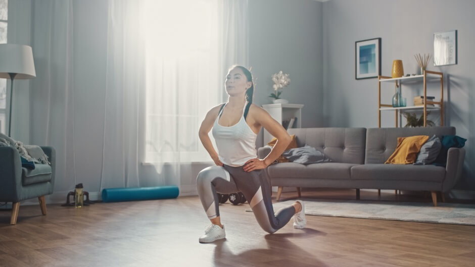
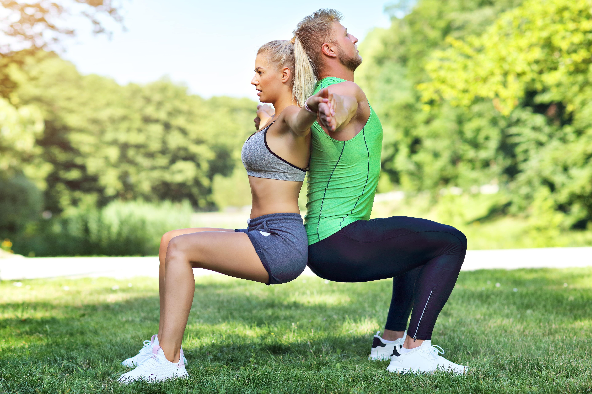

Aquecimento
Vamos criar um guia rápido de aquecimento!
O aquecimento é o primeiro passo para um treino seguro e eficaz. Ele prepara o corpo para o esforço físico, reduzindo o risco de lesões e melhorando o desempenho.

Por que aquecer?
Aumenta a temperatura corporal
Melhora a flexibilidade
Lubrifica as articulações
Prepara o sistema cardiovascular
Diminui o risco de lesões
Como fazer?
Cardio leve: Comece com 5-10 minutos de atividade aeróbica leve, como caminhada rápida, bicicleta ou pular corda.
Movimentos dinâmicos: Realize movimentos amplos e controlados, como círculos com os braços e pernas, rotações de tronco e lunges.
Alongamento dinâmico: Faça alongamentos em movimento, como balançar as pernas para frente e para trás ou girar o tronco. Evite alongamentos estáticos (ficar parado em uma posição) no início do aquecimento.
Especificidade: Inclua exercícios que mimetizem os movimentos da atividade que você vai realizar. Por exemplo, se for correr, faça trotes leves e elevadas de joelhos.
Exemplo de aquecimento:
5 minutos de caminhada rápida
Círculos com os braços e pernas (10 repetições para cada lado)
Rotações de tronco (10 repetições para cada lado)
Lunges (10 repetições para cada perna)
Balançar as pernas para frente e para trás (10 repetições para cada perna)
Elevadas de joelhos (10 repetições)
Dicas:
Aqueça por pelo menos 5-10 minutos.
Aumente gradualmente a intensidade dos exercícios.
Ouça o seu corpo e pare se sentir alguma dor.
Adapte o aquecimento à atividade que você vai realizar.
Lembre-se: O aquecimento é fundamental para qualquer atividade física, seja uma caminhada leve ou um treino intenso. Dedique alguns minutos para essa etapa e aproveite todos os benefícios que ela oferece!
Exercício

Vamos nos movimentar!
Escolher os exercícios certos depende dos seus objetivos e condicionamento físico. Mas, para te dar uma ideia, aqui estão algumas opções para diferentes grupos musculares e tipos de treino:
Para o corpo todo:
Agachamentos: Fortalecem pernas, glúteos e core.
Flexões: Trabalham peitoral, tríceps e ombros.
Plank: Fortalece o core (região abdominal e lombar).
Burpees: Exercício completo que trabalha diversos grupos musculares.
Para a parte superior do corpo:
Remada: Fortalece as costas.
Desenvolvimento: Trabalha os ombros.
Rosca direta: Fortalece os bíceps.
Tríceps testa: Trabalha os tríceps.
Para a parte inferior do corpo:
Afundos: Fortalecem pernas e glúteos.
Elevação lateral: Trabalha os glúteos.
Panturrilha: Fortalece a panturrilha.
Para o core:
Russian twist: Trabalha os oblíquos.
Bicicleta: Fortalece o abdômen.
Prancha lateral: Fortalece os oblíquos e o core.
Para cardio:
Corrida: Queima calorias e melhora a resistência cardiovascular.
Natação: Exercício de baixo impacto que trabalha todo o corpo.
Ciclismo: Ótimo para fortalecer as pernas e melhorar a resistência.
Pular corda: Exercício de alta intensidade que queima muitas calorias.
Lembre-se:
Comece devagar: Ajuste a intensidade e o número de repetições de acordo com sua capacidade.
Varie os exercícios: Isso evita a monotonia e trabalha diferentes grupos musculares.
Faça um aquecimento antes e um alongamento após o treino: Isso ajuda a prevenir lesões.
Consulte um profissional de educação física: Ele poderá te ajudar a montar um treino personalizado e seguro.
Cuidados pessoais

Cuidados Pessoais: O Bem-estar Completo
Cuidados pessoais envolvem um conjunto de hábitos e práticas que promovem a saúde física, mental e emocional. É um ato de amor-próprio que vai além da aparência, englobando desde a higiene básica até cuidados com a alimentação, sono e bem-estar emocional.
Por que são importantes?
Saúde física: Ajudam a prevenir doenças, fortalecer o sistema imunológico e manter o corpo em forma.
Saúde mental: Contribuem para uma boa autoestima, reduzem o estresse e aumentam a sensação de bem-estar.
Qualidade de vida: Proporcionam mais energia, disposição e produtividade no dia a dia.
Quais são os principais cuidados pessoais?
Higiene: Banho diário, escovação dos dentes, cuidados com as unhas e cabelos.
Alimentação: Uma dieta equilibrada, rica em frutas, legumes, verduras e proteínas.
Sono: Dormir bem é essencial para o bom funcionamento do corpo e da mente.
Hidratação: Beber bastante água ao longo do dia.
Atividade física: Praticar exercícios regularmente.
Saúde mental: Buscar momentos de relaxamento, praticar hobbies e, se necessário, procurar ajuda profissional.
Cuidados com a pele: Limpeza, hidratação e proteção solar.
Check-ups médicos: Visitas regulares ao médico para prevenir doenças.
Dicas para uma rotina de cuidados pessoais:
Estabeleça uma rotina: Defina horários para cada atividade e tente segui-los.
Seja gentil consigo mesmo: Não se cobre demais, celebre suas conquistas e seja paciente consigo mesmo.
Peça ajuda: Não tenha vergonha de pedir ajuda quando precisar.
Faça o que te faz bem: Inclua atividades que você gosta em sua rotina de cuidados pessoais.
Lembre-se: cuidar de si mesmo é um ato de amor-próprio e fundamental para uma vida mais feliz e saudável.